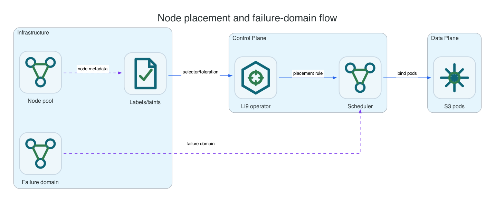

Reference / Platform
Node placement and failure-domain selection.
Placement decides which nodes may run Li9 S3 data and metadata components, while failure domains decide how protected data is spread. Use labels for intent and tolerations only when nodes are intentionally tainted for storage workloads.
Concepts

| Concept | Meaning | Applies To |
|---|---|---|
| Node selector | Limits storage or metadata pods to nodes with required labels. | OpenShift Operator and Helm. |
| Toleration | Allows placement onto nodes tainted for Li9 S3. It does not reserve nodes by itself. | OpenShift Operator and Helm. |
| Failure domain | Label value used to avoid placing all protected copies or shards in one node, rack, zone, or datacenter. | Distributed data and metadata placement. |
| Host identity | Durable node ID in native package installs. | Linux and Windows. |
OpenShift Labels
oc label node worker-1 storage.li9.com/s3-node=true
oc label node worker-2 storage.li9.com/s3-node=true
oc label node worker-3 storage.li9.com/s3-node=true
oc label node worker-1 topology.li9.com/failure-domain=rack-a
oc label node worker-2 topology.li9.com/failure-domain=rack-b
oc label node worker-3 topology.li9.com/failure-domain=rack-c
oc get nodes -l storage.li9.com/s3-node=true --show-labelsTaints And Tolerations
A taint such as dedicated=li9-s3:NoSchedule prevents ordinary pods from scheduling unless they have a matching toleration. It does not prevent privileged admins from scheduling other workloads that also tolerate the taint. Treat taints as scheduling policy, not a security boundary.
oc adm taint node worker-1 dedicated=li9-s3:NoSchedule
oc adm taint node worker-2 dedicated=li9-s3:NoSchedule
oc adm taint node worker-3 dedicated=li9-s3:NoSchedule
oc describe node worker-1 | grep -A3 TaintsConfiguration Surfaces
| Mode | Where Placement Is Configured | Verification |
|---|---|---|
| OpenShift Operator | S3Storage.spec.storage.data.placement, metadata placement, node selectors, tolerations, and failure-domain labels. | oc -n li9-s3-runtime get pods -o wide and oc get s3storage li9-s3 -o yaml. |
| Helm | Chart values for node selectors, affinity, tolerations, topology spread, and storage-node counts. | helm get values and rendered pod specs. |
| Linux | Cluster node list in host config; failure domains are node/rack/zone labels in the Li9 S3 config. | li9-s3ctl cluster members. |
| Windows | Cluster node list in host config; failure domains are node/rack/zone labels in the Li9 S3 config. | li9-s3ctl.exe cluster members. |
Validation
oc -n li9-s3-runtime get pods -l app.kubernetes.io/part-of=li9-s3 -o wide
oc -n li9-s3-runtime get s3storage li9-s3 -o jsonpath='{.status.conditions}' | python3 -m json.tool
oc -n li9-s3-runtime get events --sort-by=.lastTimestamp | tail -40